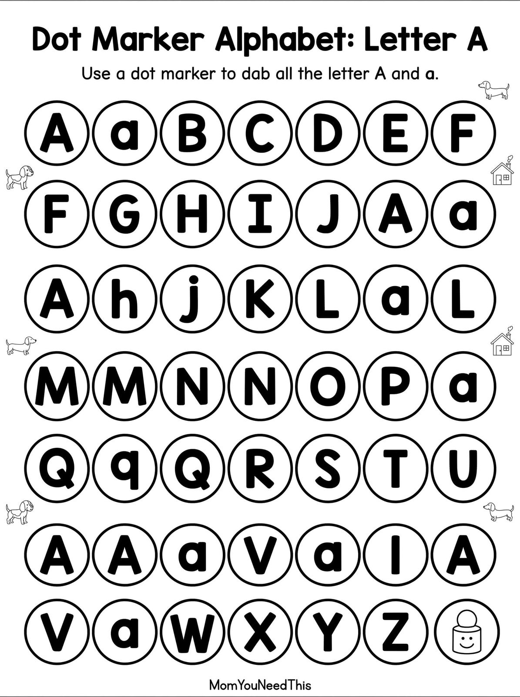
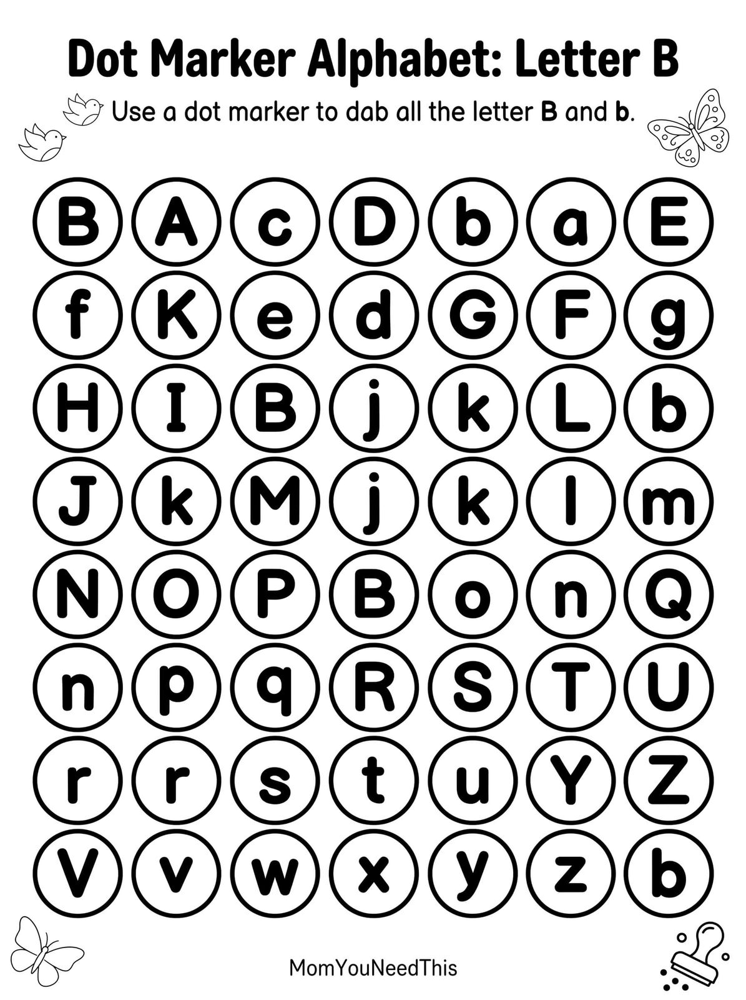
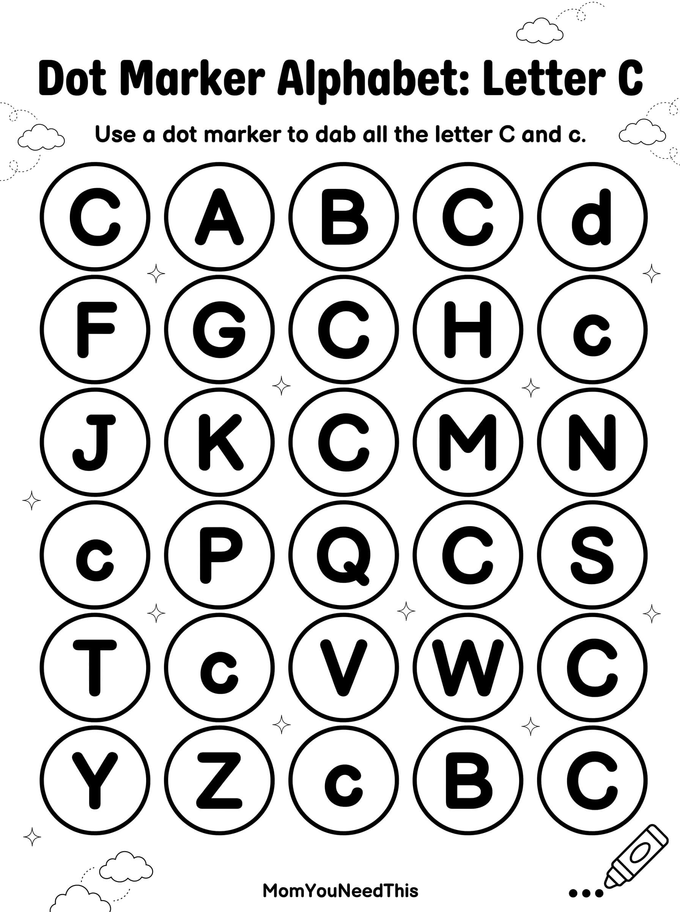

Dot Marker Printables Alphabet Worksheets for Toddlers
These dot marker printables help toddlers and preschoolers learn the alphabet using fun dot marker activities. Kids simply dab each letter while practicing letter recognition, fine motor skills, and early literacy.

Letter A Dot Marker
Practice the letter A using bingo daubers, dot markers, stickers, or fingerprints.
⏬ Download Letter A

Letter B Dot Marker
Build letter recognition while filling every B with colorful dot markers.
⏬ Download Letter B

Letter C Dot Marker
A fun hands-on alphabet printable perfect for preschool learning.
⏬ Download Letter C
Skills Your Child Practices
⭐ More Alphabet Activities
Pair these dot marker worksheets with alphabet coloring pages, tracing worksheets, matching games, and find-the-letter activities.
📚 Letter Recognition ActivitiesMore Free Learning Resources
Browse hundreds of free printable learning activities including alphabet practice, numbers, tracing worksheets, coloring pages, preschool games, and educational printables.
🎁 View All Free Resources🖨️ How to Use This Printable
Get started in minutes — everything here is free and made for busy parents.
- Download the printable. Tap the download button to save the free Dot Marker Alphabet Worksheets file to your device.
- Print it out. Use any home printer and regular paper — cardstock works great for pages little hands will use again and again.
- Learn together. Sit with your child, follow the activity, and keep it playful. Short sessions work best.
- Explore more. Check the free printables linked below for your next activity.
🔴 Dot Marker Printables
These dot marker printables are made for little hands and big fun. Dot markers are the perfect first art tool — no brush control needed, just satisfying stamps of color. Our dot marker printables include alphabet pages, shapes, and seasonal designs.
Use dot marker printables for letter learning, color practice, and fine motor skills. Kids stamp each circle, building hand strength and focus without the frustration of staying inside lines. It is one of the most forgiving crafts for toddlers.
Tip: put a few sheets of dot marker printables in a tray with markers for an instant, mess-free activity station.
See Letter A sheet for more.

❓ Dot Marker Alphabet Worksheets FAQs
Is this Dot Marker Alphabet Worksheets printable free?
Yes — every printable on MomYouNeedThis is 100% free to download and print. No signup, no payment, just tap the download button.
How do I use this alphabet printable?
Print the page and work through it together: name the letter, make its sound, and complete the activity. Short, playful sessions work better than long lessons for little learners.
What literacy skills does this practice?
Letter recognition, beginning sounds, and print awareness — the core pre-reading skills that prepare children for phonics and reading.
What are dot marker printables?
Dot marker printables are activity pages with circles to stamp using dot markers (bingo daubers). They build hand strength, color recognition, and letter skills through a simple stamp-and-fill activity kids love.
🔗 More Free Printables You’ll Love
Pair this printable with more free learning activities from the MomYouNeedThis library.
- 🔤 Alphabet Coloring PagesFree A to Z alphabet coloring printables for toddlers and preschoolers.
- 🎏 Free Alphabet Tracing PagesFree alphabet tracing pages printable for toddlers and preschoolers.
- 🎏 Free Beginning Sounds PagesFree beginning sounds pages printable for toddlers and preschoolers.
- 🎏 Free Find & Color Letter WorksheetsFree find & color letter worksheets printable for toddlers and preschoolers.